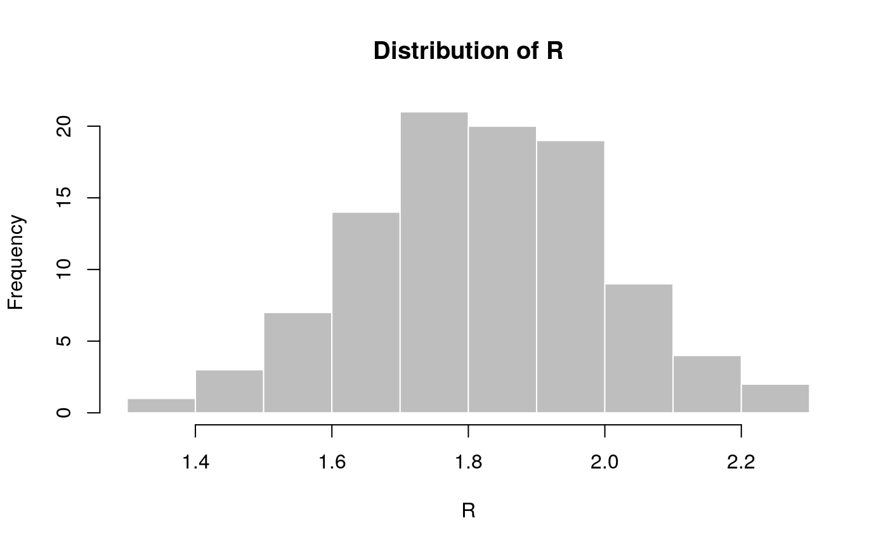
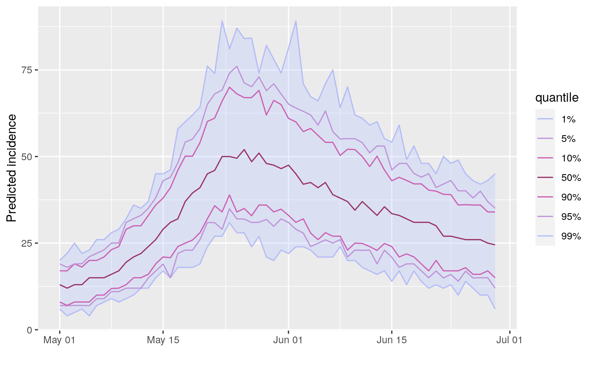

project.RdThis function simulates future incidence based on past incidence data, a selection of plausible reproduction numbers (R), and the distribution of the serial interval (time from primary onset to secondary onset).
project(x, R, si, n_sim = 100, n_days = 7, R_fix_within = FALSE, model = c("poisson", "negbin"), size = 0.03)
| x | An |
|---|---|
| R | A vector of numbers representing plausible reproduction numbers; for
instance, these can be samples from a posterior distribution using the
|
| si | A function computing the serial interval, or a |
| n_sim | The number of epicurves to simulate. Defaults to 100. |
| n_days | The number of days to run simulations for. Defaults to 14. |
| R_fix_within | A logical indicating if R should be fixed within
simulations (but still varying across simulations). If |
| model | Distribution to be used for projections. Must be one of "poisson" or "negbin" (negative binomial process). Defaults to poisson |
| size | size parameter of negative binomial distribition. Ignored if model is poisson |
The decision to fix R values within simulations
(R_fix_within) reflects two alternative views of the uncertainty
associated with R. When drawing R values at random from the provided
sample, (R_fix_within set to FALSE), it is assumed that R
varies naturally, and can be treated as a random variable with a given
distribution. When fixing values within simulations (R_fix_within
set to TRUE), R is treated as a fixed parameter, and the
uncertainty is merely a consequence of the estimation of R. In other
words, the first view is rather Bayesian, while the second is more
frequentist.
## example using simulated Ebola outbreak if (require(outbreaks) && require(distcrete) && require(incidence) && require(magrittr)) { si <- distcrete("gamma", interval = 1L, shape = 0.37, scale = 41.4, w = 0) i <- incidence(ebola_sim$linelist$date_of_onset) plot(i) ## projections after the first 100 days, over 60 days, fixed R to 2.1 set.seed(1) proj_1 <- project(x = i[1:100], R = 2.1, si = si, n_days = 60) plot(proj_1) ## add projections to incidence plot plot(i[1:160]) %>% add_projections(proj_1) ## projections after the first 100 days, over 60 days, varying R set.seed(1) R <- rnorm(100, 1.8, 0.2) hist(R, col = "grey", border = "white", main = "Distribution of R") proj_2 <- project(x = i[1:100], R = R, si = si, n_days = 60) ## add projections to incidence plot plot(i[1:160]) %>% add_projections(proj_2) ## same with R constant per simulation (more variability) set.seed(1) proj_3 <- project(x = i[1:100], R = R, si = si, n_days = 60, R_fix_within = TRUE) ## add projections to incidence plot plot(i[1:160]) %>% add_projections(proj_3) }